1Überblick und Aufbau der Oberfläche
Die Notenverwaltung ist das Kernmodul von ClassTiles. Sie erfassen darin Noten, gliedern sie in beliebig tief verschachtelte Bereiche, gewichten diese Bereiche und lassen ClassTiles daraus Durchschnitte bis hin zur Jahresnote berechnen.
Beim ersten Start
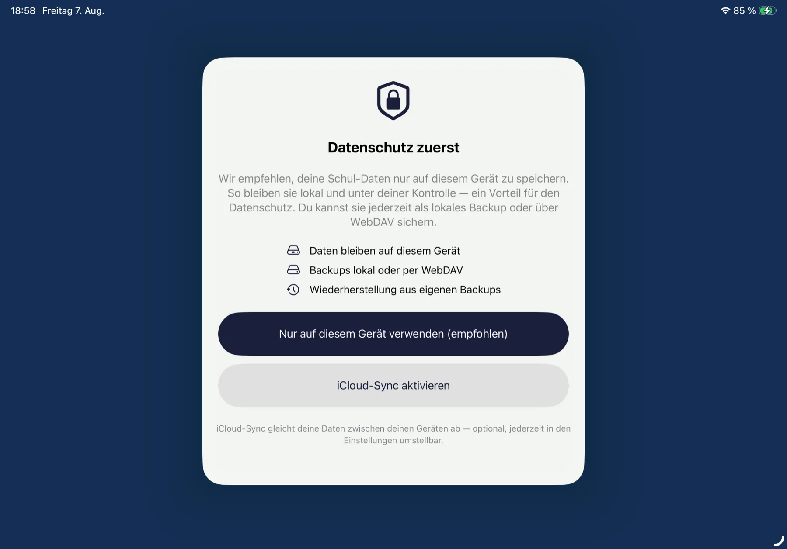
Was Sie sehen: Nach der Installation – und nach einem vollständigen Zurücksetzen – fragt ClassTiles einmalig, wo Ihre Daten liegen sollen. Die empfohlene Variante speichert alles ausschließlich auf diesem Gerät; iCloud-Sync aktivieren gleicht die Daten zusätzlich zwischen Ihren Apple-Geräten ab.
Was Sie hier tun müssen: Wählen Sie eine der beiden Schaltflächen – ohne Auswahl geht es nicht weiter. Für Schuldaten ist Nur auf diesem Gerät verwenden die datenschutzfreundlichste Wahl. Die Entscheidung ist nicht endgültig: Sie können den iCloud-Sync später jederzeit unter Einstellungen → Synchronisation umstellen.
Das Dashboard
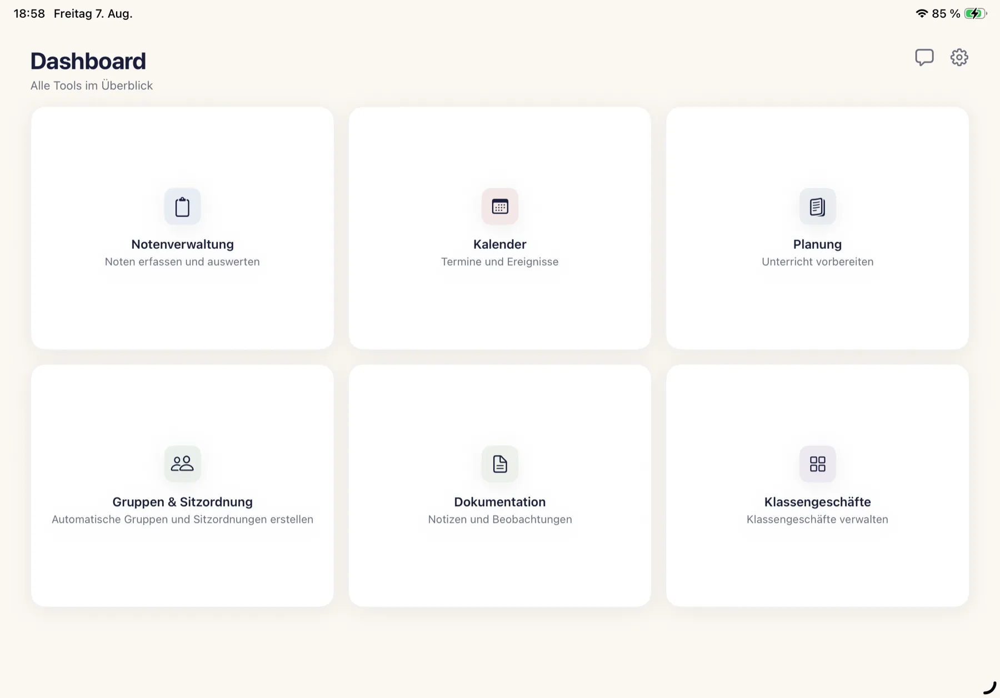
Was Sie sehen: Die Startseite mit je einer Kachel pro Modul: Notenverwaltung, Kalender, Planung, Gruppen & Sitzordnung, Dokumentation und Klassengeschäfte. Oben rechts liegen das Zahnrad für die Einstellungen und die Feedback-Schaltfläche.
Was Sie hier tun können: Tippen Sie auf Notenverwaltung, um in das Modul zu wechseln. Sobald Sie in einem Modul sind, erscheint am oberen Bildschirmrand eine Leiste mit allen Modulnamen – ab dann wechseln Sie direkt zwischen den Modulen, ohne über das Dashboard zu gehen.
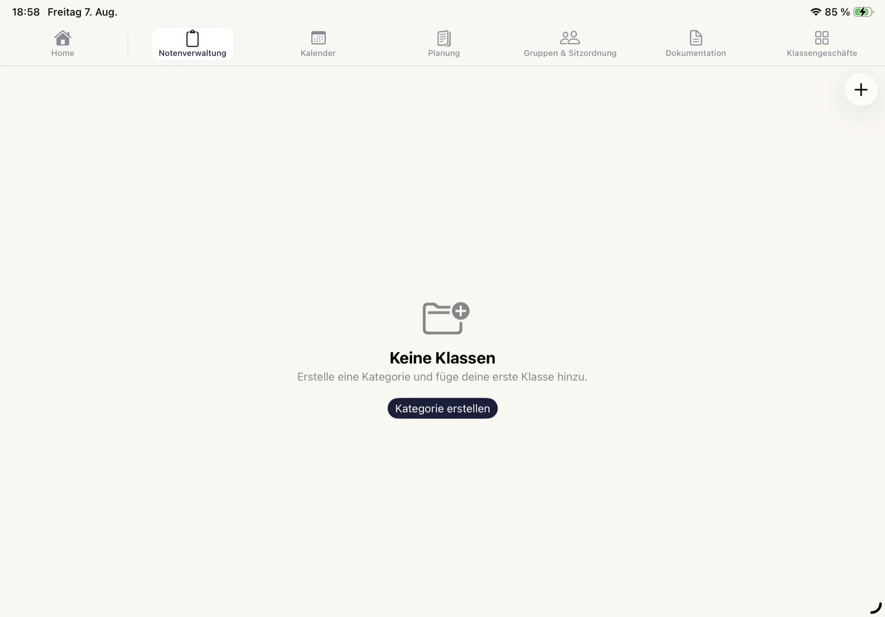
Was Sie sehen: Solange noch keine Klasse existiert, zeigt das Modul den Hinweis Keine Klassen und schlägt den ersten Schritt gleich vor.
Was Sie hier tun müssen: Tippen Sie auf Kategorie erstellen. Klassen werden in ClassTiles immer innerhalb einer Kategorie geführt – typischerweise ein Schuljahr. Alternativ erreichen Sie dieselben Befehle jederzeit über das +-Symbol oben rechts.
Die drei Bereiche einer Notentabelle
Eine geöffnete Notentabelle ist immer gleich aufgebaut. Wenn Sie sich diese drei Bereiche einprägen, finden Sie sich in jeder Klasse sofort zurecht:
| Bereich | Inhalt und Bedeutung |
|---|---|
| Werkzeugleiste ganz oben |
Klassenname, Rückgängig, CSV-Import, Teilen (Export), Vollbild, Umschalter für den Spaltenkopf, Tabellenoptionen und Neuer Reiter. |
| Reiterleiste darunter |
Eine Klasse kann mehrere unabhängige Notentabellen enthalten – zum Beispiel eine für die Fachnoten und eine für die Kopfnoten. Jede davon ist ein Reiter. |
| Tabelle | Links die feststehende Namensspalte, rechts der Notenbaum: oben die Kopfzeilen mit Bereichen und Gewichtungen, darunter die Zellen. Beide Bereiche scrollen unabhängig voneinander. |
2Klassen und Kategorien organisieren
Kategorien sind Ordner für Klassen. Sie fassen üblicherweise ein Schuljahr zusammen, können aber auch nach Schule, Jahrgang oder Fachbereich geschnitten werden.
Kategorie anlegen
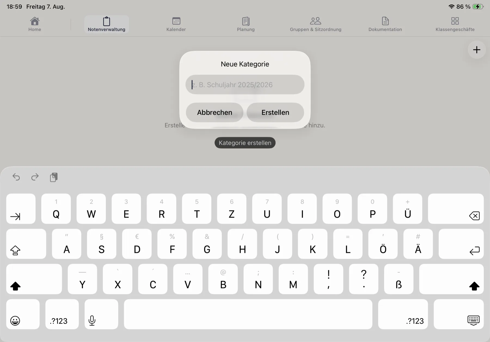
Was Sie sehen: Ein schlanker Dialog mit einem einzigen Eingabefeld. Der graue Text z. B. Schuljahr 2025/2026 ist nur ein Platzhalter, kein Inhalt.
Was Sie hier tun müssen: Tragen Sie einen Namen ein und bestätigen Sie mit Erstellen. Solange das Feld leer ist – oder nur Leerzeichen enthält – bleibt Erstellen wirkungslos. Namen dürfen bis zu 80 Zeichen lang sein; längere Eingaben werden mit einem Hinweis gekürzt.
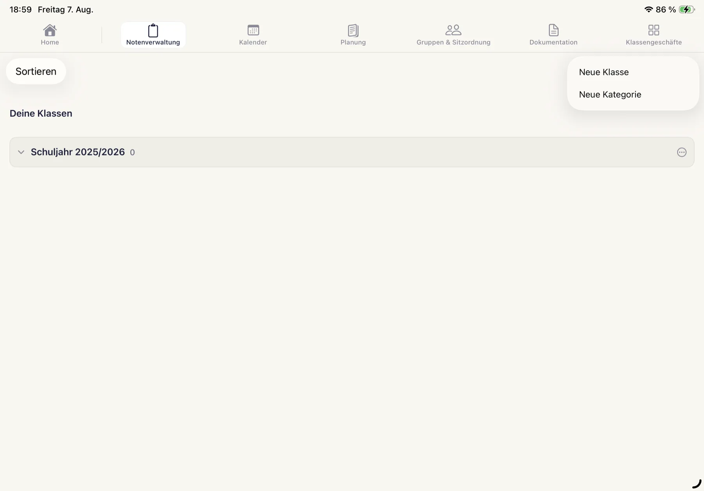
Was Sie sehen: Hinter dem + oben rechts liegen beide Anlagebefehle: Neue Klasse und Neue Kategorie.
Was Sie hier tun können: Über diesen Weg legen Sie jederzeit weitere Kategorien an – etwa wenn im Februar ein zweites Halbjahr dazukommt. Für die erste Klasse wählen Sie Neue Klasse.
Klasse anlegen
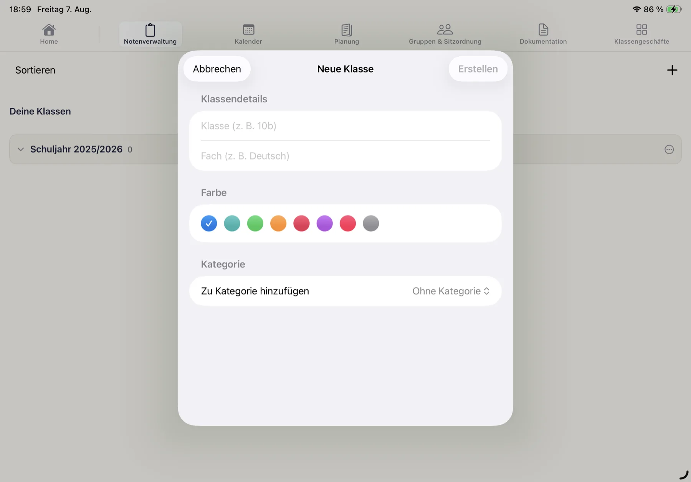
Was Sie sehen: Vier Angaben bilden eine Klasse: Klassenbezeichnung, Fach, Farbe und Kategorie. Erstellen oben rechts ist zunächst ausgegraut, und unter Kategorie steht noch Ohne Kategorie.
Was Sie hier tun müssen: Füllen Sie mindestens Klasse und Fach aus – erst dann wird Erstellen aktiv. Die Farbe ist reine Orientierungshilfe: Sie lässt Klassen im Schulalltag schneller auseinanderhalten.
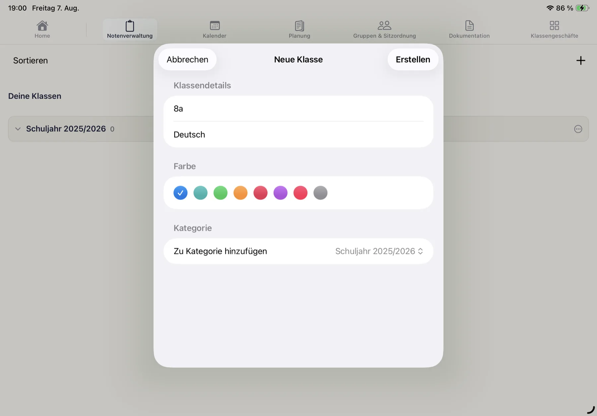
Was Sie sehen: 8a und Deutsch stehen in den Feldern, unter Kategorie steht jetzt Schuljahr 2025/2026, und Erstellen ist aktiv.
Was Sie hier tun können: Tippen Sie auf die Zeile Zu Kategorie hinzufügen, um die Kategorie zu wechseln. Vergessen Sie das, landet die Klasse unter Ohne Kategorie – das lässt sich später über Verschieben nach… im Kontextmenü korrigieren.
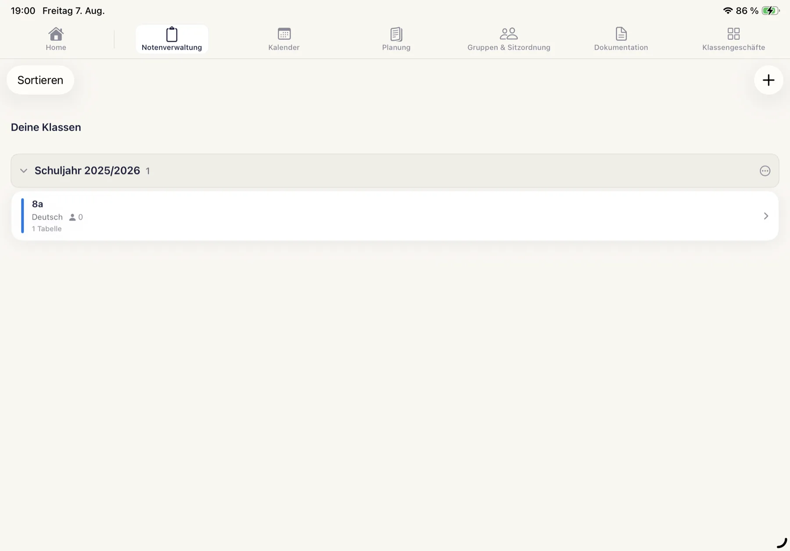
Was Sie sehen: Die Klasse steht unter ihrer Kategorie. Die Zeile nennt Klassenbezeichnung, Fach, die Zahl der Schüler:innen und die Zahl der Notentabellen. Rechts neben dem Kategorienamen steht eine Ziffer: die Zahl der Klassen darin.
Was Sie hier tun können: Ein Tipp auf die Zeile öffnet die Notentabelle. Über Sortieren ordnen Sie die Liste um, über den Pfeil links neben dem Kategorienamen klappen Sie eine ganze Kategorie zu.
Klasse bearbeiten, verschieben oder löschen
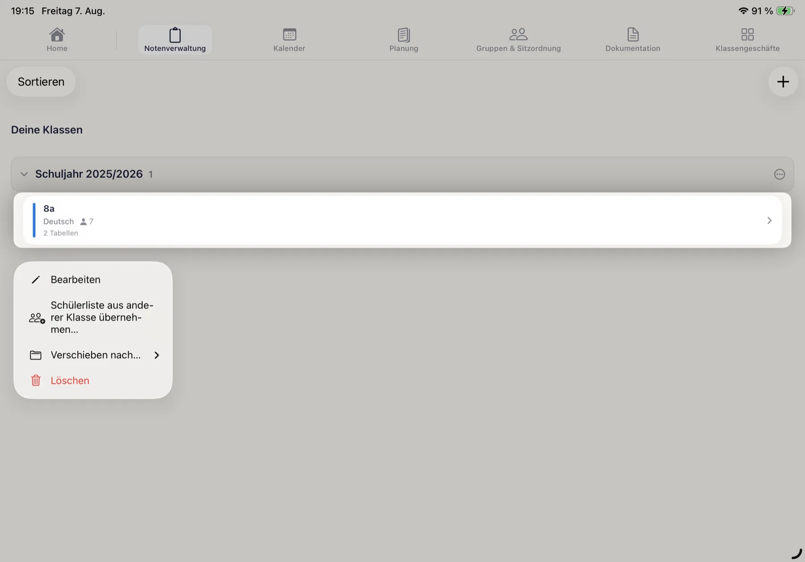
Was Sie sehen: Ein längerer Fingerdruck auf eine Klassenzeile öffnet vier Befehle: Bearbeiten, Schülerliste aus anderer Klasse übernehmen…, Verschieben nach… und Löschen.
Was Sie hier tun können: Besonders nützlich ist Schülerliste aus anderer Klasse übernehmen…: Unterrichten Sie dieselbe Lerngruppe in zwei Fächern, sparen Sie sich damit das erneute Eintippen aller Namen. Verschieben nach… ordnet die Klasse einer anderen Kategorie zu.
Ein längerer Fingerdruck funktioniert nur auf Klassen, nicht auf Kategoriezeilen. Um eine Kategorie umzubenennen oder zu löschen, tippen Sie auf das Drei-Punkte-Symbol am rechten Rand der Kategoriezeile – dort stehen Umbenennen und Kategorie löschen.
3Schüler:innen hinzufügen und entfernen
Namen werden einmal zentral gepflegt: ClassTiles führt eine geräteweite Schülerdatenbank. Dieselbe Person kann in mehreren Klassen sitzen, behält dort aber getrennte Noten. Wird der Name korrigiert, ändert er sich überall zugleich.
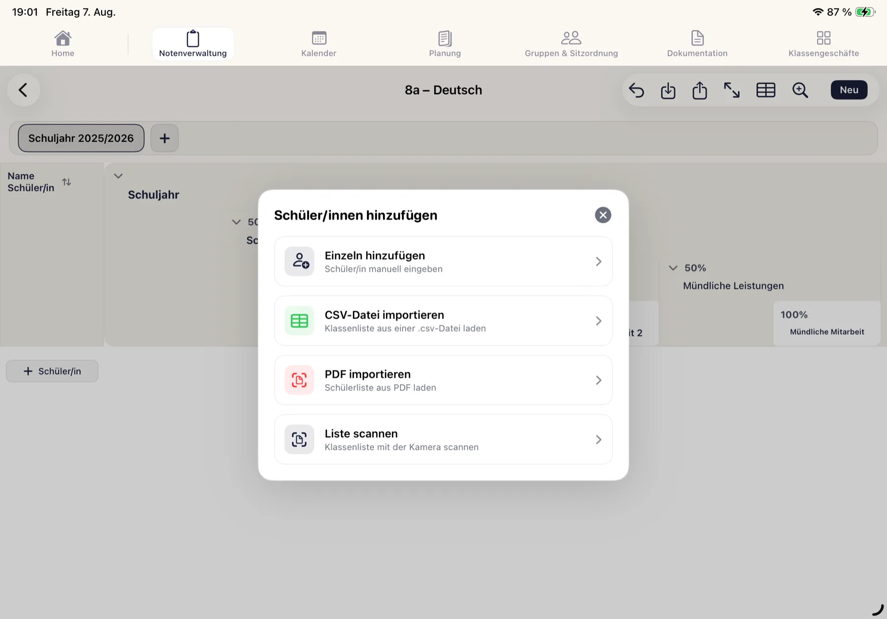
Was Sie sehen: Nach einem Tipp auf Schüler/in am unteren Rand der Namensspalte stehen vier Verfahren zur Wahl: manuelle Eingabe, CSV-Datei importieren, PDF importieren und Liste scannen mit der Kamera.
Was Sie hier tun können: Für einzelne Nachzügler nehmen Sie Einzeln hinzufügen. Für eine ganze Klasse lohnt der Import: CSV braucht zwingend die Spalten Vorname und Nachname – eine einzelne Spalte Name wird abgelehnt. Der PDF- und der Scan-Weg lesen Klassenlisten aus dem Sekretariat ein.
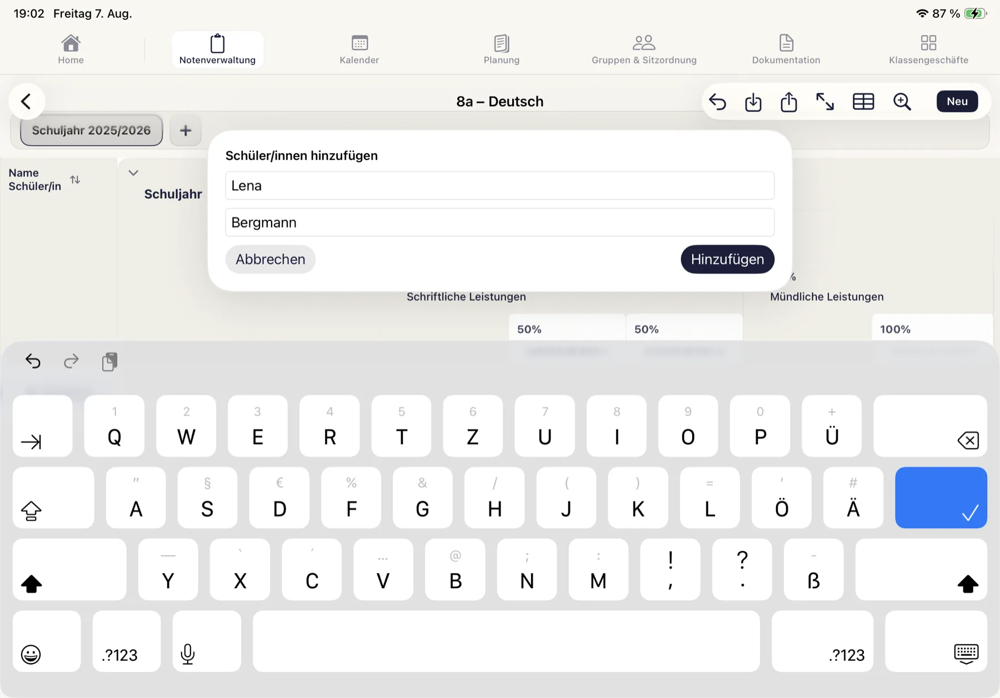
Was Sie sehen: Zwei getrennte Felder für Vor- und Nachname. Der Cursor steht bereits im Vornamen.
Was Sie hier tun können: Tippen Sie den Vornamen, gehen Sie mit Weiter auf der Tastatur ins zweite Feld, und bestätigen Sie mit Hinzufügen. Ein Feld genügt: Personen mit nur einem Namen sind möglich. Nach dem Hinzufügen schließt sich das Fenster; für die nächste Person beginnen Sie erneut bei Schüler/in.
Existiert der Name bereits in der Datenbank, erscheint die Rückfrage Name bereits vorhanden. Sie entscheiden dann, ob die vorhandene Person übernommen oder ein neuer Datensatz angelegt wird. Der Abgleich verzeiht Groß- und Kleinschreibung, Umlautschreibweisen (Mueller ≙ Müller) und kleine Tippfehler. Sitzt die Person bereits in dieser Klasse, ist Bestätigen gesperrt – eine versehentliche Doppelzeile kann so nicht entstehen.
Reihenfolge und Namensanzeige
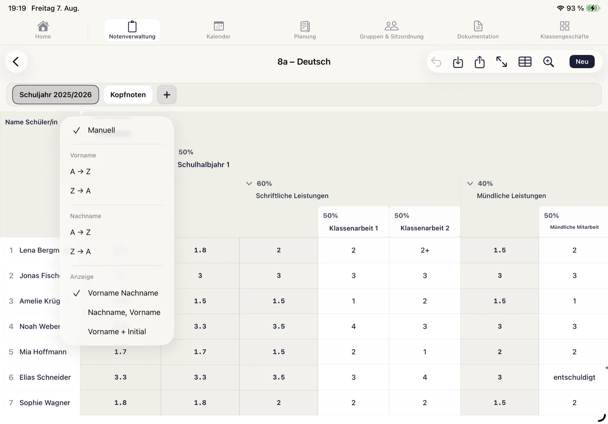
Was Sie sehen: Das Menü hinter dem Pfeilsymbol neben Name Schüler/in. Oben die Sortierung – Manuell, nach Vorname oder nach Nachname, jeweils A → Z oder Z → A. Unten unter Anzeige die Schreibweise in der Spalte.
Was Sie hier tun können: Vorname + Initial ist praktisch, wenn die Tabelle projiziert wird und vollständige Nachnamen nicht zu sehen sein sollen. Manuell behält Ihre eigene Reihenfolge bei; diese ändern Sie, indem Sie einen Namen länger gedrückt halten und ihn verschieben.
Ein längerer Fingerdruck auf einen Namen bietet Aus Klasse entfernen. Damit verschwinden die Noten dieser Person in dieser Klasse, die Person selbst bleibt aber in der Schülerdatenbank erhalten und taucht dort gegebenenfalls als „verwaist“ auf. Die Noten landen als Schülerzeile im Papierkorb und lassen sich von dort zurückholen (Kapitel 12).
4Reiter: mehrere Notentabellen je Klasse
Jede Klasse kann mehrere voneinander unabhängige Notentabellen enthalten. Jede davon hat eine eigene Struktur, eine eigene Notenskala und optional eine eigene Rundung – die Schüler:innen sind in allen Reitern dieselben.
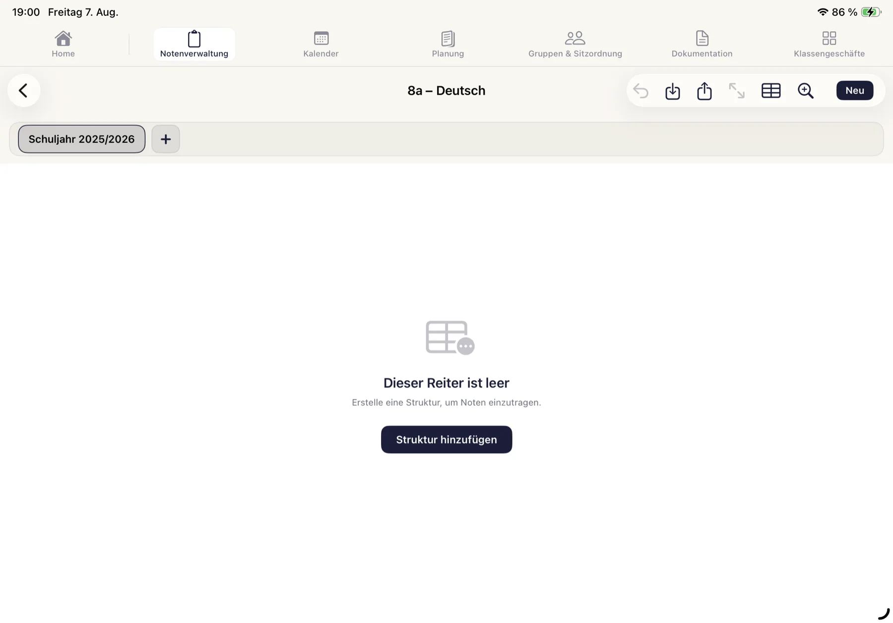
Was Sie sehen: Die neue Klasse bringt automatisch einen ersten Reiter mit. Er trägt den Namen der Kategorie – hier Schuljahr 2025/2026 – und ist noch ohne Struktur.
Was Sie hier tun müssen: Tippen Sie auf Struktur hinzufügen. Ohne Struktur gibt es keine Spalten und damit auch keine Zellen, in die Noten eingetragen werden könnten. Den Reiternamen ändern Sie jederzeit (Abb. 18).
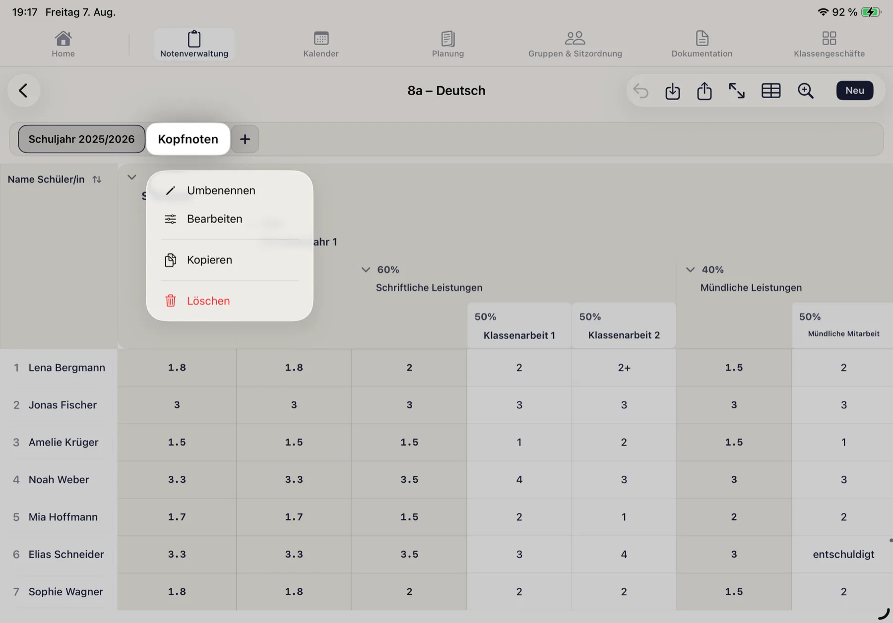
Was Sie sehen: Ein längerer Fingerdruck auf einen Reiter zeigt Umbenennen, Bearbeiten, Kopieren und Löschen.
Was Sie hier tun können: Umbenennen ändert nur den Namen, Bearbeiten öffnet die vollständigen Reitereinstellungen. Kopieren legt die Struktur des Reiters in die Zwischenablage – wie Sie sie weiterverwenden, zeigt der nächste Abschnitt. Löschen fragt nach und legt den Reiter anschließend in den Papierkorb.
Eine Struktur auf weitere Reiter übertragen
Haben Sie eine Gliederung einmal sauber aufgebaut, müssen Sie sie kein zweites Mal von Hand anlegen. Kopieren und Einfügen übertragen die komplette Struktur samt Gewichtungen auf einen anderen Reiter – die Noten bleiben dabei außen vor.
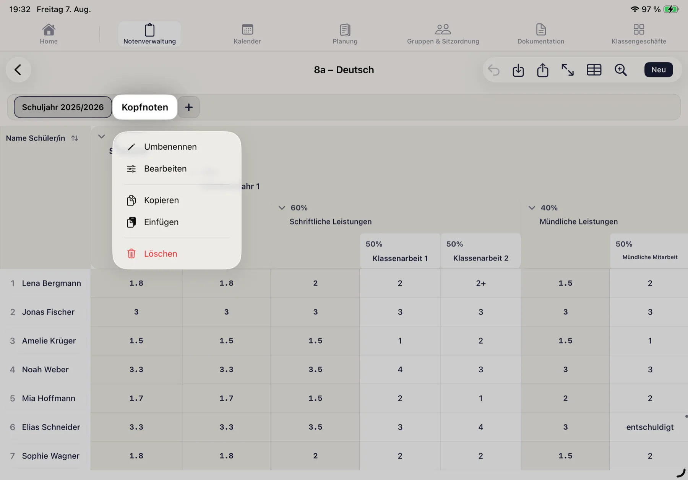
Was Sie sehen: Dasselbe Kontextmenü wie in Abb. 14, jetzt aber mit einem fünften Eintrag: Einfügen. Er taucht nur auf, solange eine kopierte Struktur in der Zwischenablage liegt.
Was Sie hier tun müssen: Halten Sie zuerst den Quell-Reiter gedrückt und wählen Kopieren. Halten Sie danach den Ziel-Reiter gedrückt – erst dort steht Einfügen zur Verfügung. Die Reihenfolge ist entscheidend; unmittelbar nach dem Kopieren passiert sichtbar nichts, das ist normal.
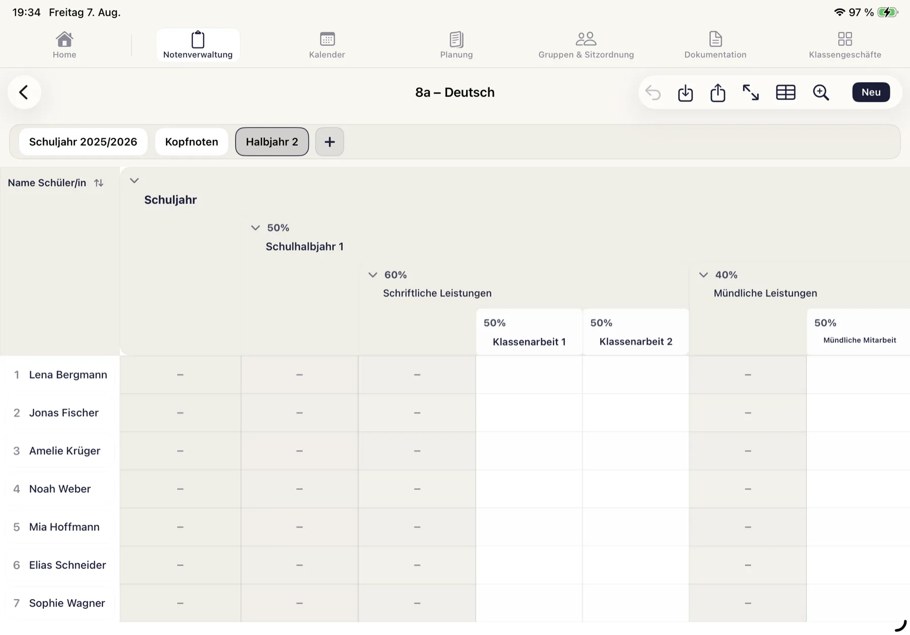
Was Sie sehen: Der zuvor leere Reiter Halbjahr 2 hat jetzt dieselbe Gliederung wie der Hauptreiter – einschließlich der angepassten Gewichtungen 60 % und 40 %. Die Zellen sind leer.
Was Sie hier tun können: Genau dafür ist die Funktion gedacht: Legen Sie für das zweite Halbjahr, ein weiteres Fach oder eine Parallelklasse einen neuen Reiter an, fügen Sie die Struktur ein und benennen Sie anschließend nur noch die Spalten um. Der Weg über Struktur hinzufügen entfällt damit vollständig.
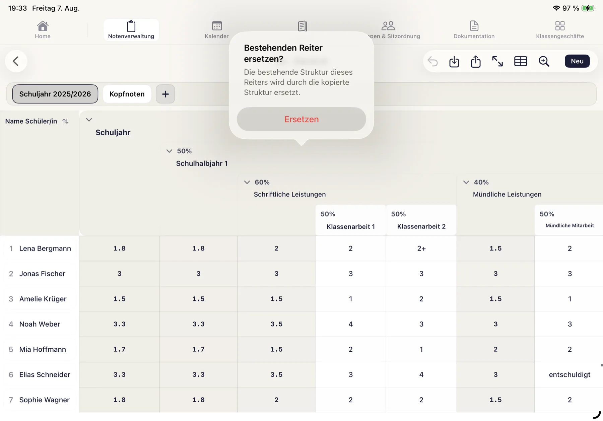
Was Sie sehen: Ist der Zielreiter nicht leer, fragt ClassTiles nach: Bestehenden Reiter ersetzen? – „Die bestehende Struktur dieses Reiters wird durch die kopierte Struktur ersetzt.“
Was Sie hier tun müssen: Lesen Sie diese Rückfrage genau. Mit Ersetzen verliert der Zielreiter seine bisherige Gliederung. Wollen Sie das nicht, tippen Sie neben das Fenster – es schließt sich folgenlos. Bei einem leeren Reiter erscheint diese Rückfrage gar nicht erst.
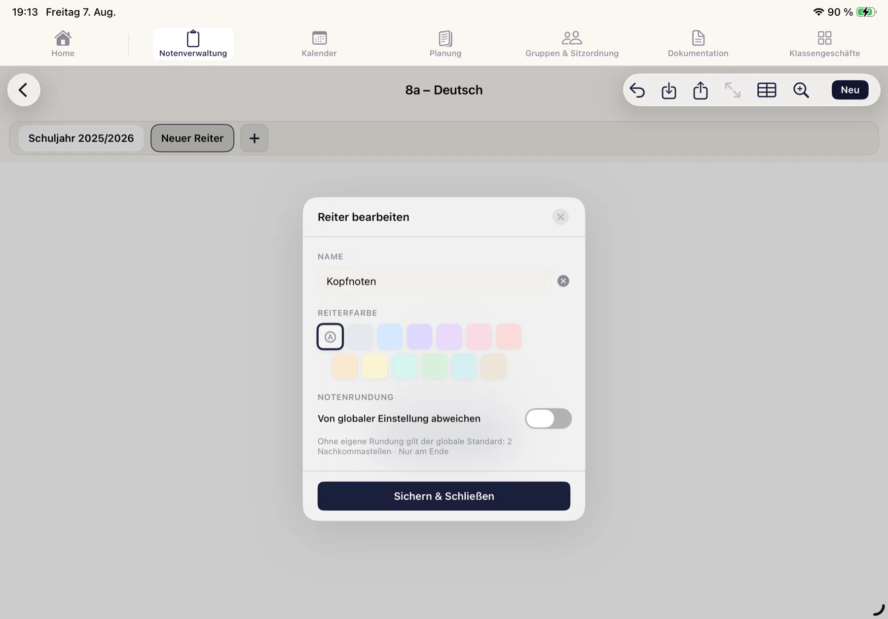
Was Sie sehen: Name, Reiterfarbe und – besonders wichtig – der Schalter Von globaler Einstellung abweichen unter Notenrundung. Der Text darunter nennt die aktuell geltende globale Vorgabe.
Was Sie hier tun können: Lassen Sie den Schalter aus, gilt für diesen Reiter die Einstellung aus Kapitel 11. Schalten Sie ihn ein, wenn ausgerechnet dieser Reiter anders gerundet werden soll – etwa ein Kopfnoten-Reiter ohne Nachkommastellen. Sichern Sie mit Sichern & Schließen.
5Struktur und Gewichtung
Die Struktur ist das Herzstück der Notenverwaltung. Sie besteht aus nur zwei Bausteinen: Berechnungsbereiche fassen zusammen und rechnen, Notenspalten nehmen die eigentlichen Noten auf. Beide lassen sich beliebig tief schachteln und prozentual gewichten.
Struktur anlegen
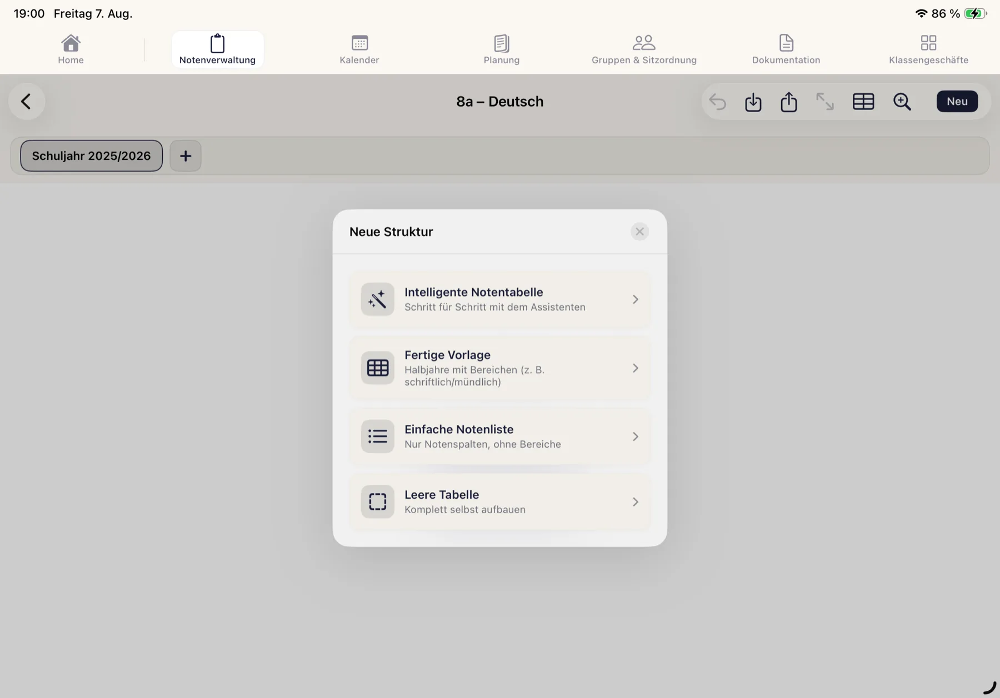
Was Sie sehen: Intelligente Notentabelle führt Schritt für Schritt durch einen Assistenten. Fertige Vorlage erzeugt sofort Halbjahre mit schriftlichem und mündlichem Bereich. Einfache Notenliste legt nur Notenspalten ohne Bereiche an. Leere Tabelle überlässt Ihnen den kompletten Aufbau.
Was Sie hier tun können: Für den klassischen Fachunterricht ist Fertige Vorlage der schnellste Weg – sie liefert genau die Struktur, die in den folgenden Abbildungen zu sehen ist, und lässt sich danach frei anpassen. Einfache Notenliste genügt für Vertretungs- oder AG-Stunden, in denen nur eine Handvoll Noten anfällt.
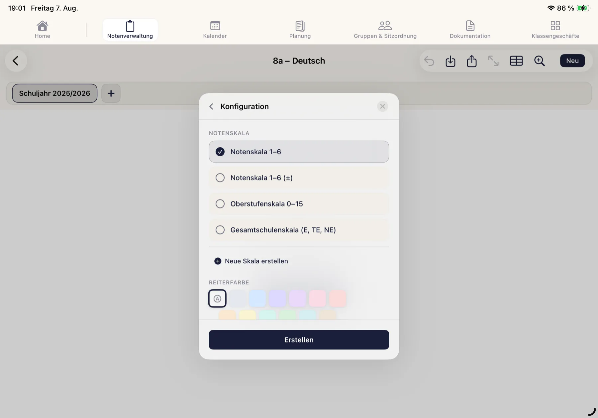
Was Sie sehen: Vor dem Erzeugen der Struktur wählen Sie die Notenskala: Notenskala 1–6, Notenskala 1–6 (±), Oberstufenskala 0–15 oder Gesamtschulenskala (E, TE, NE). Darunter lässt sich die Reiterfarbe setzen.
Was Sie hier tun müssen: Wählen Sie die Skala bewusst – ein späterer Wechsel ist möglich, aber aufwendig und verändert alle bereits eingetragenen Werte (siehe Warnung in Kapitel 7). Mit Erstellen ganz unten schließen Sie den Vorgang ab; scrollen Sie gegebenenfalls, um die Schaltfläche zu erreichen.
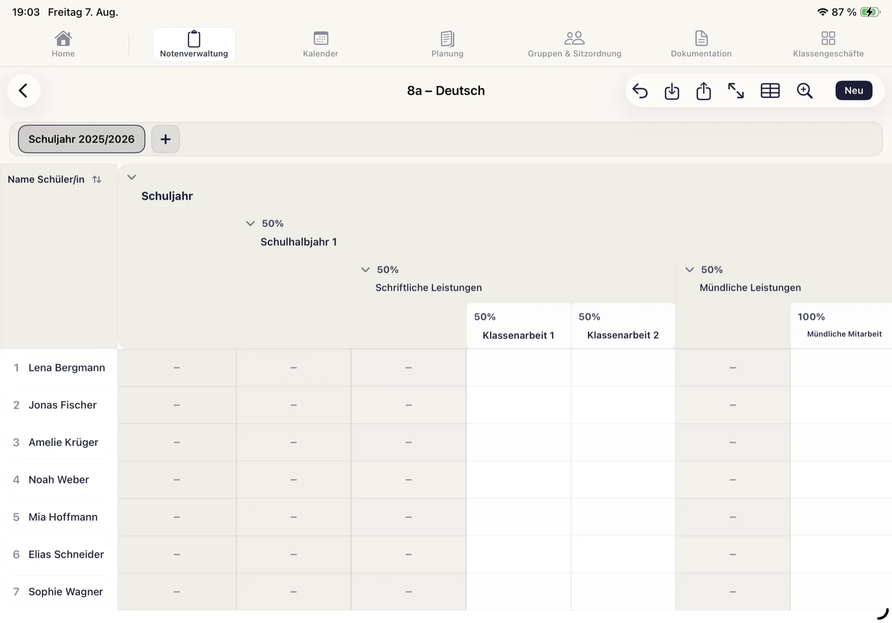
Was Sie sehen: Der Kopfbereich zeigt die Hierarchie von oben nach unten: Schuljahr → Schulhalbjahr 1 (50 %) → Schriftliche Leistungen und Mündliche Leistungen → darunter die einzelnen Notenspalten. Jeder Kasten trägt seinen Prozentanteil an der Ebene, zu der er gehört. Die Striche in den Zellen bedeuten: noch kein Wert vorhanden.
Was Sie hier tun können: Klappen Sie mit dem kleinen Pfeil in einem Bereichskopf ganze Äste zu, wenn die Tabelle zu breit wird – etwa das Halbjahr, das gerade nicht unterrichtet wird. Das ist reine Ansichtssache und verändert weder Noten noch Export.
Bereiche und Spalten ergänzen
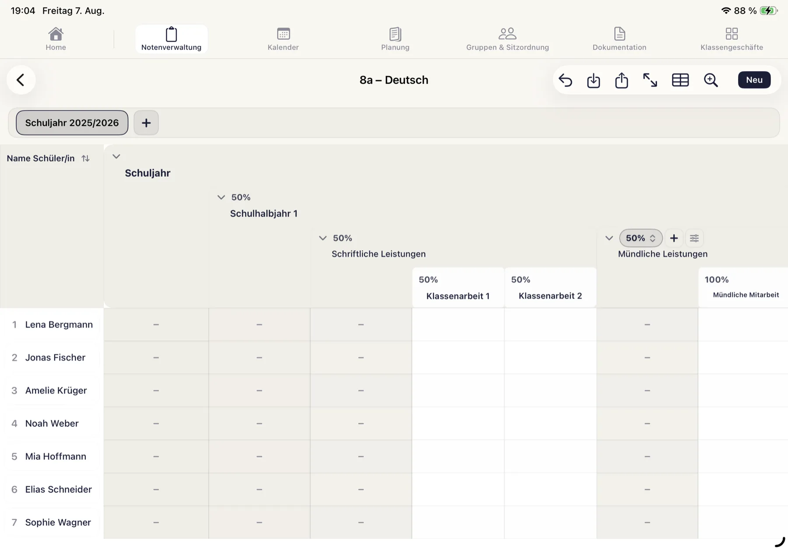
Was Sie sehen: Ein einfacher Tipp auf einen Bereichskopf blendet drei kleine Schaltflächen ein: den Gewichtungswert mit Pfeil (50 % ⌄), ein + und ein Reglersymbol.
Was Sie hier tun können: Über den Prozentwert ändern Sie die Gewichtung (Abb. 24), über + fügen Sie ein untergeordnetes Element ein, über das Reglersymbol erreichen Sie Einstellungen und Statistik. Merken Sie sich diese Leiste – sie ist der Zugang zu fast allen Struktur-Befehlen.
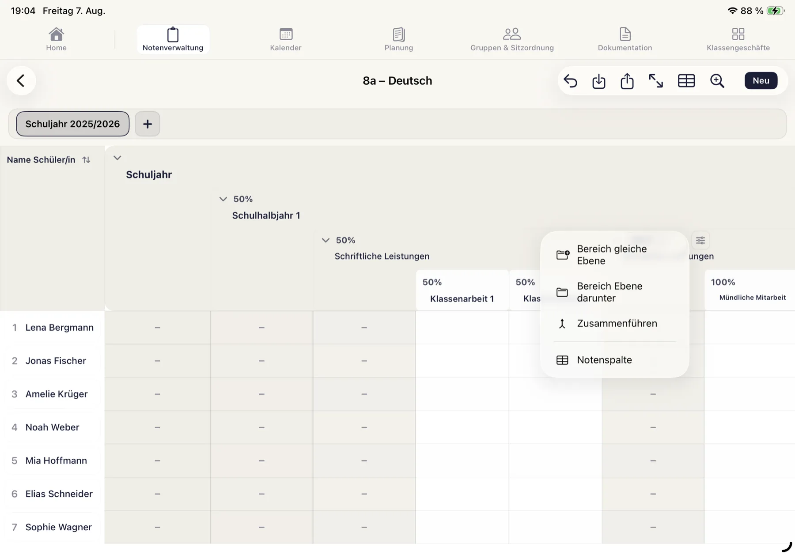
Was Sie sehen: Vier Möglichkeiten: Bereich gleiche Ebene legt einen Geschwisterbereich an, Bereich Ebene darunter einen untergeordneten, Zusammenführen vereint Bereiche, und Notenspalte erzeugt eine Spalte für echte Noten.
Was Sie hier tun müssen: Achten Sie auf den Unterschied zwischen „gleiche Ebene“ und „Ebene darunter“ – er entscheidet darüber, ob der neue Bereich neben oder unter dem angetippten liegt. Neue Elemente heißen zunächst Neue Notenspalte beziehungsweise Neuer Bereich und sollten gleich umbenannt werden.
Das + ganz rechts am Rand der Kopfzeile fügt immer auf oberster Ebene ein. Wollen Sie etwas innerhalb eines Bereichs anlegen, tippen Sie erst diesen Bereich an und benutzen dann das + aus seiner Inline-Leiste. Notenspalten haben keine eigene Inline-Ergänzung: Eine zweite Spalte legen Sie immer über den übergeordneten Bereich an.
Gewichtung festlegen
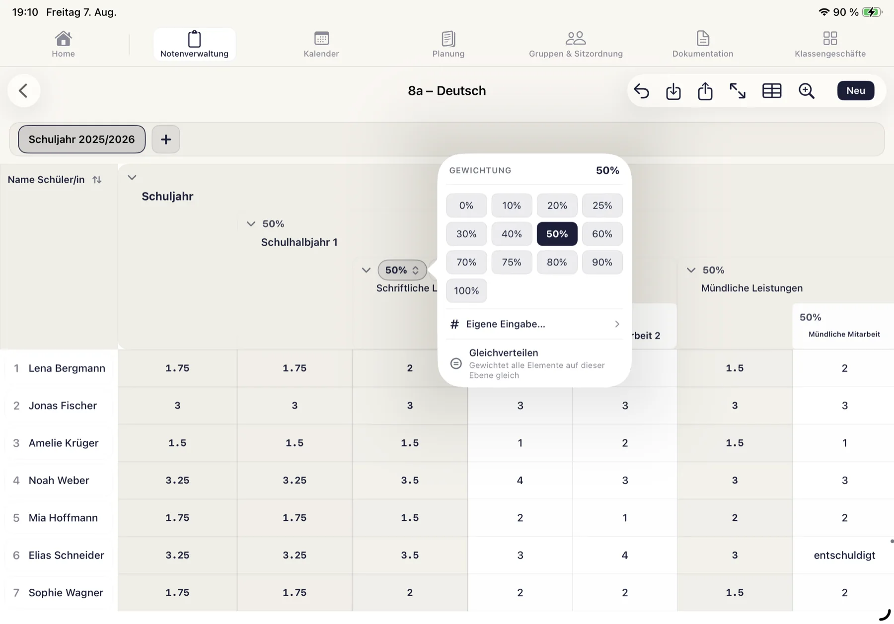
Was Sie sehen: Ein Raster gängiger Prozentwerte von 0 % bis 100 %, darunter Eigene Eingabe… für krumme Werte und Gleichverteilen.
Was Sie hier tun können: Tippen Sie einen Wert an – ClassTiles normiert die Geschwister automatisch auf zusammen 100 %. Setzen Sie Schriftliche Leistungen auf 60 %, springt Mündliche Leistungen von selbst auf 40 %. Sie müssen also nie beide Werte von Hand pflegen. Gleichverteilen verteilt eine Ebene gleichmäßig und legt den Rest auf das letzte Element (etwa 33,33 / 33,33 / 33,34).
Nur über Eigene Eingabe… lässt sich eine Ebene erzeugen, deren Summe von 100 % abweicht. In diesem Fall zeigt der übergeordnete Bereich ein orangefarbenes Warndreieck; VoiceOver nennt es Gewichtung unvollständig. Gerechnet wird trotzdem – ClassTiles normiert intern auf die tatsächliche Summe. Das Dreieck ist also ein Hinweis, kein Fehler; Sie sollten die Werte aber prüfen. Beachten Sie außerdem, dass das Eingabefeld ein Dezimalkomma erwartet.
Notenspalte einrichten
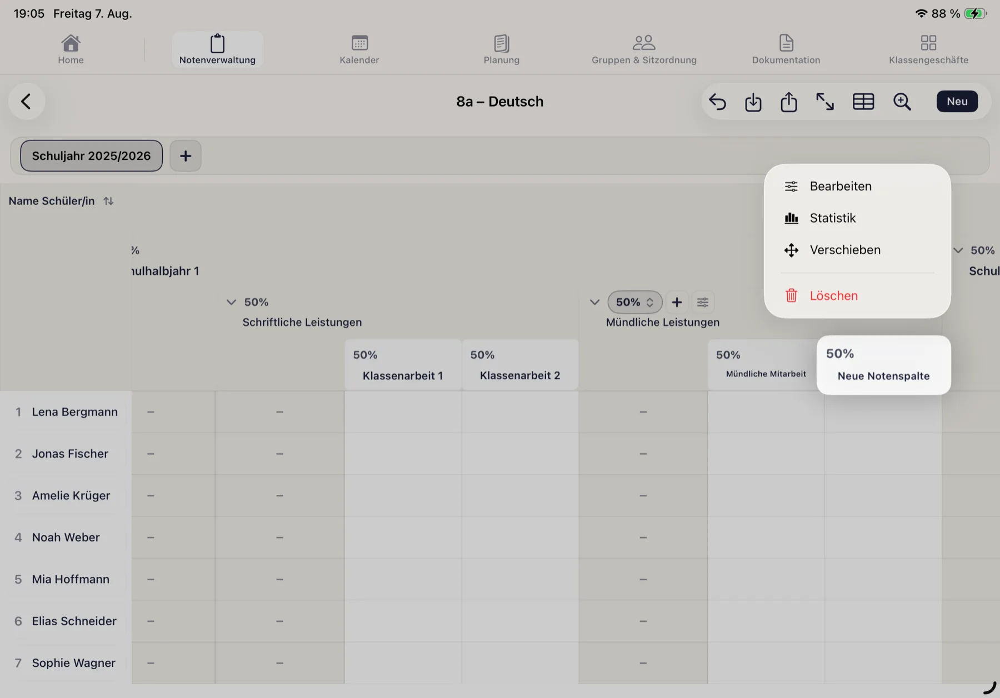
Was Sie sehen: Ein längerer Fingerdruck auf einen Spaltenkopf zeigt Bearbeiten, Statistik, Verschieben und Löschen.
Was Sie hier tun können: Verschieben schaltet in einen Modus, in dem Sie mit Einfügepfeilen die Zielposition wählen – auch über Ebenen hinweg. Ziehen mit dem Finger ist dafür nicht vorgesehen. Nach einem Ebenenwechsel prüfen Sie am besten kurz die Prozentwerte der beteiligten Bereiche.
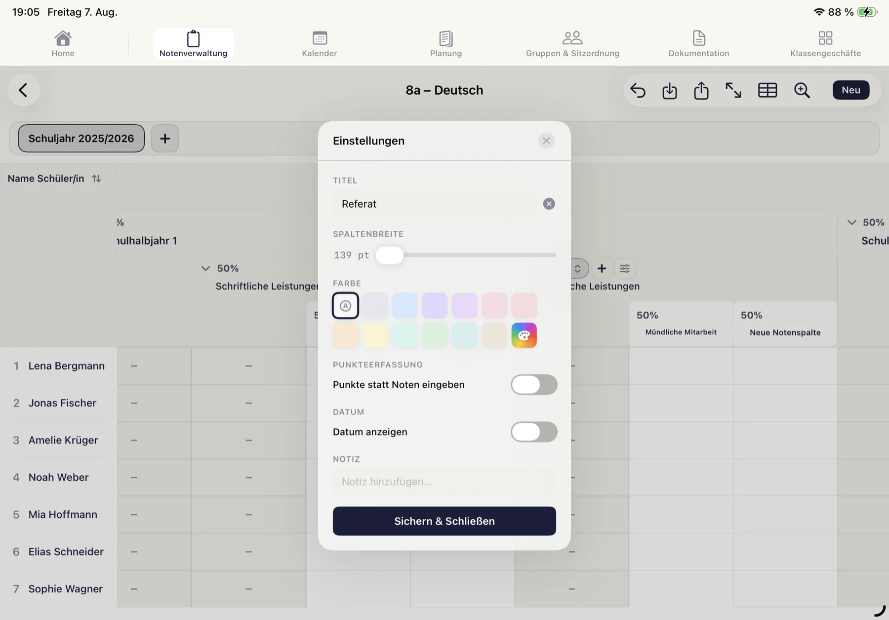
Was Sie sehen: Titel, Spaltenbreite, Farbe, der Schalter Punkte statt Noten eingeben, der Schalter Datum anzeigen und ein Feld für eine Notiz zur ganzen Spalte.
Was Sie hier tun können: Geben Sie der Spalte einen sprechenden Namen – er erscheint später auch im Export. Punkte statt Noten eingeben ist für Klassenarbeiten gedacht, bei denen Sie Rohpunkte erfassen und ClassTiles daraus die Note ableiten lässt. Über Datum anzeigen halten Sie fest, wann die Leistung erbracht wurde. Abschließen mit Sichern & Schließen.
6Noten eingeben
Alle Eingaben laufen über ein einziges Fenster, den Notenfeld-Editor. Er öffnet sich mit einem Tipp auf eine Zelle und bietet drei Eingabearten: Note, Text und Symbol.
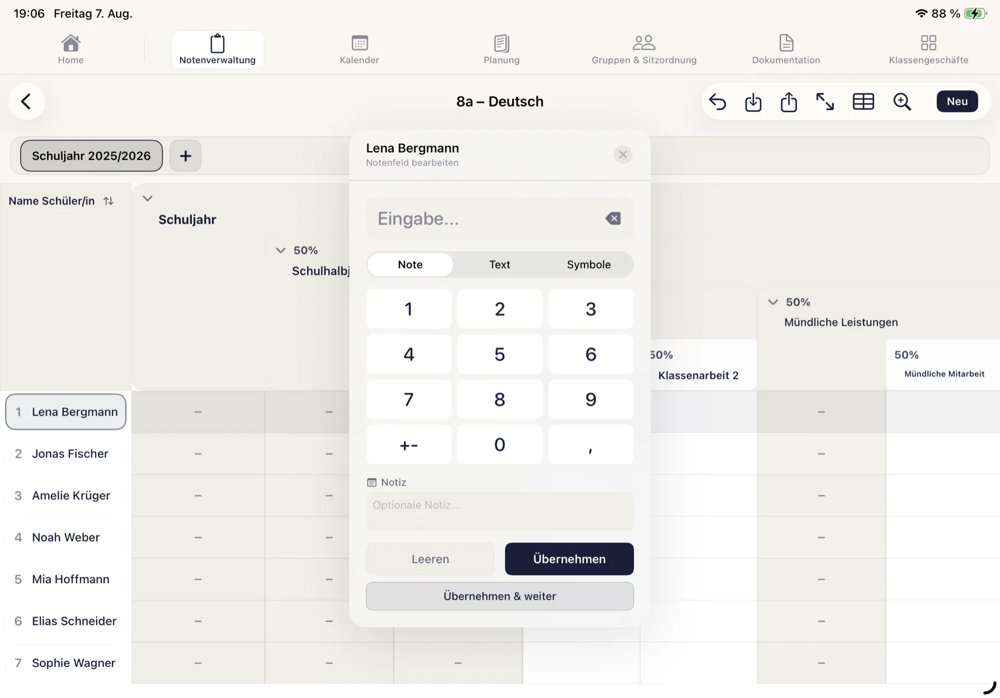
Was Sie sehen: Oben stehen Name und Spalte, damit klar ist, welche Zelle bearbeitet wird. Darunter der Umschalter Note | Text | Symbole, ein app-eigenes Ziffernfeld, ein Feld für eine Notiz und drei Schaltflächen: Leeren, Übernehmen und Übernehmen & weiter.
Was Sie hier tun können: Nutzen Sie Übernehmen & weiter, um eine ganze Spalte zügig zu erfassen: Der Editor speichert und springt sofort in die nächste Zeile derselben Spalte. Beim letzten Eintrag nehmen Sie Übernehmen, sonst öffnet sich das Fenster erneut.
Der Editor ergänzt die vorhandene Eingabe, statt sie zu ersetzen: Steht in der Zelle eine 1 und Sie tippen 6, entsteht 16. Tippen Sie deshalb zuerst auf Leeren, wenn Sie eine Note korrigieren wollen. Umgekehrt gilt: Eine leere Eingabe überschreibt einen bestehenden Wert nicht.
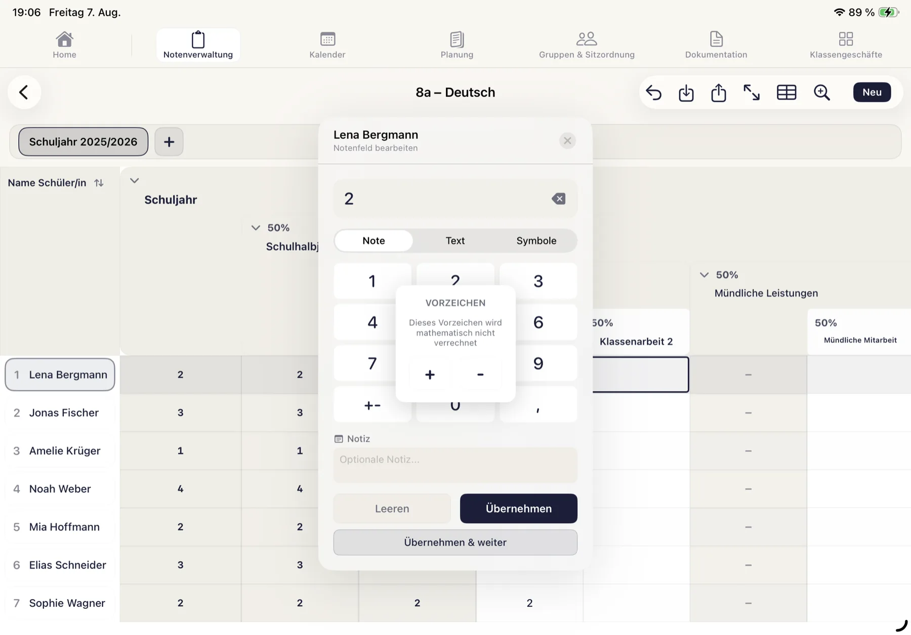
Was Sie sehen: Die Taste +- öffnet das kleine Fenster VORZEICHEN mit den Tasten + und - sowie dem Hinweis, dass dieses Vorzeichen mathematisch nicht verrechnet wird.
Was Sie hier tun müssen: Erst die Ziffer, dann +-, dann das gewünschte Vorzeichen – in dieser Reihenfolge. In der Zelle steht anschließend etwa 2+, gerechnet wird jedoch mit glatt 2. Wenn die Tendenz rechnerisch wirken soll, wählen Sie für den Reiter die Skala Notenskala 1–6 (±); dort ist 2+ ein echter Zahlwert.
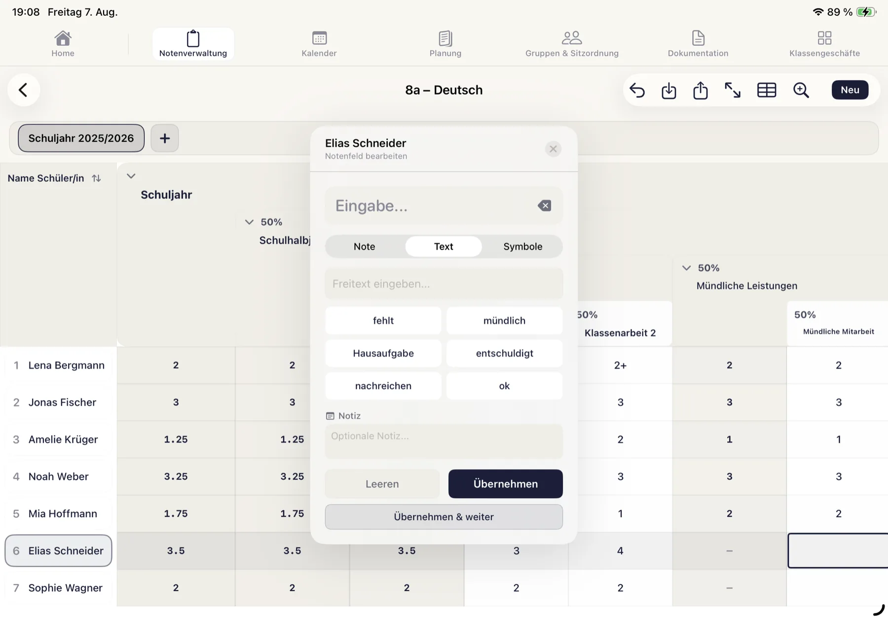
Was Sie sehen: Ein Freitextfeld und vorgefertigte Bausteine: fehlt, mündlich, Hausaufgabe, entschuldigt, nachreichen und ok.
Was Sie hier tun können: Verwenden Sie diese Einträge für alles, was keine Note ist. Solche Zellen werden aus der Berechnung genommen, und die übrigen Werte des Bereichs werden automatisch neu normiert – eine fehlende Leistung verschlechtert den Schnitt also nicht. Ergänzen Sie im Feld Notiz gern den Grund; die Notiz bleibt auch dann erhalten, wenn Sie den Wert später durch eine echte Note ersetzen.
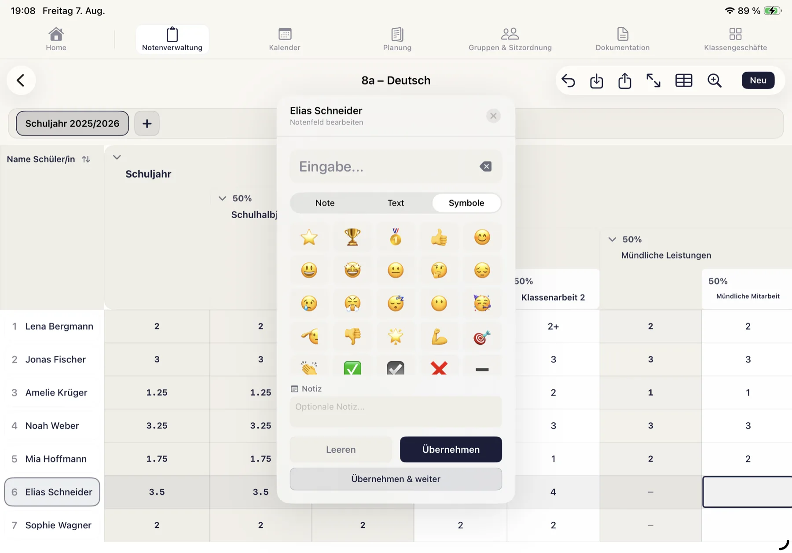
Was Sie sehen: Eine Palette aus Sternen, Daumen, Gesichtern und Zeichen wie ✅ oder ❌.
Was Sie hier tun können: Symbole eignen sich für Rückmeldungen ohne Notencharakter – abgegebene Hausaufgaben, mitgebrachtes Material, Beteiligungshäufigkeit. Auch sie fließen nicht in die Berechnung ein.
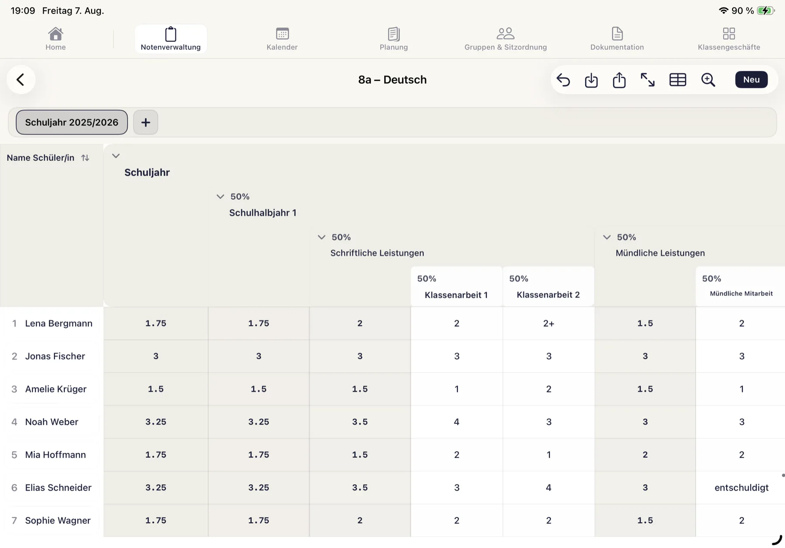
Was Sie sehen: Links die Namen, rechts die eingetragenen Werte – darunter 2+ bei Lena Bergmann und entschuldigt bei Elias Schneider. In den farblich abgesetzten Spalten stehen die berechneten Durchschnitte je Ebene, ganz links der Wert für Schuljahr.
Was Sie hier tun können: Lesen Sie die berechneten Spalten von rechts nach links wie eine Zusammenfassung: aus den Einzelnoten wird der Bereichsschnitt, aus den Bereichen das Halbjahr, aus den Halbjahren die Jahresnote. Ändern Sie irgendwo eine Note, rechnet ClassTiles alle betroffenen Werte sofort neu.
7Notenskalen und Berechnungsmethode
Die Notenskala legt fest, welche Werte in einem Reiter überhaupt zulässig sind und wie sie verrechnet werden. Sie gilt jeweils für einen ganzen Reiter – nicht für einzelne Spalten.
Eingebaute und eigene Skalen
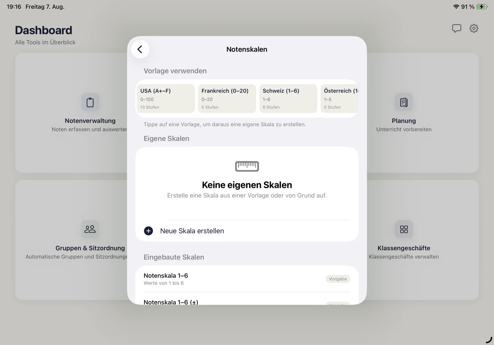
Was Sie sehen: Oben Vorlagen für andere Notensysteme – USA (A+–F), Frankreich (0–20), Schweiz (1–6) und Österreich (1–5). In der Mitte Ihre eigenen Skalen, unten die fest eingebauten.
Was Sie hier tun können: Tippen Sie eine Vorlage an, um daraus eine eigene, frei veränderbare Skala zu machen – nützlich für Punktesysteme oder schulinterne Bewertungsraster. Über Neue Skala erstellen bauen Sie eine Skala von Grund auf. Die eingebauten Skalen selbst lassen sich nicht verändern.
Verbalskalen und die Berechnungsmethode
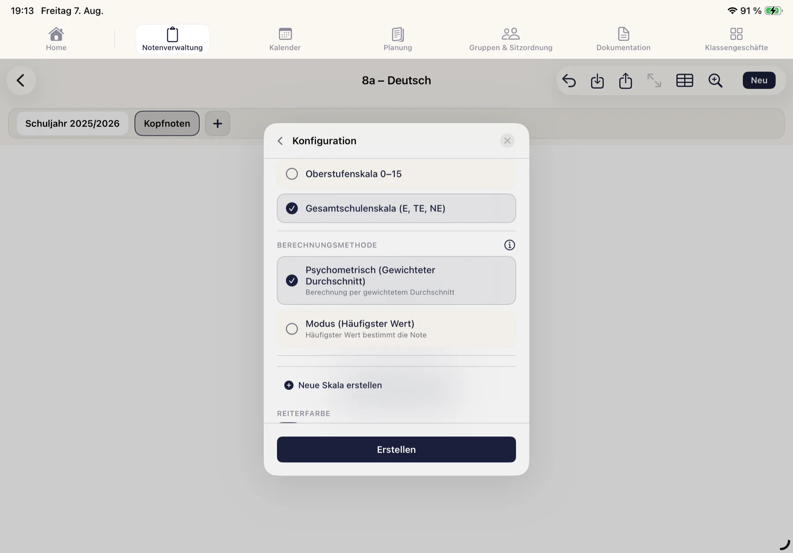
Was Sie sehen: Sobald Sie Gesamtschulenskala (E, TE, NE) auswählen, erscheint der zusätzliche Abschnitt BERECHNUNGSMETHODE mit zwei Optionen: Psychometrisch (Gewichteter Durchschnitt) und Modus (Häufigster Wert).
Was Sie hier tun müssen: Entscheiden Sie, wie aus mehreren Verbalurteilen ein Gesamturteil wird. Psychometrisch rechnet intern mit Zahlwerten und berücksichtigt Ihre Gewichtungen. Modus nimmt schlicht den häufigsten Wert – dann sind die Prozentangaben wirkungslos und die Gewichtungsbedienung wird ausgeblendet. Der Abschnitt liegt unterhalb des sichtbaren Bereichs; scrollen Sie im Fenster nach unten.
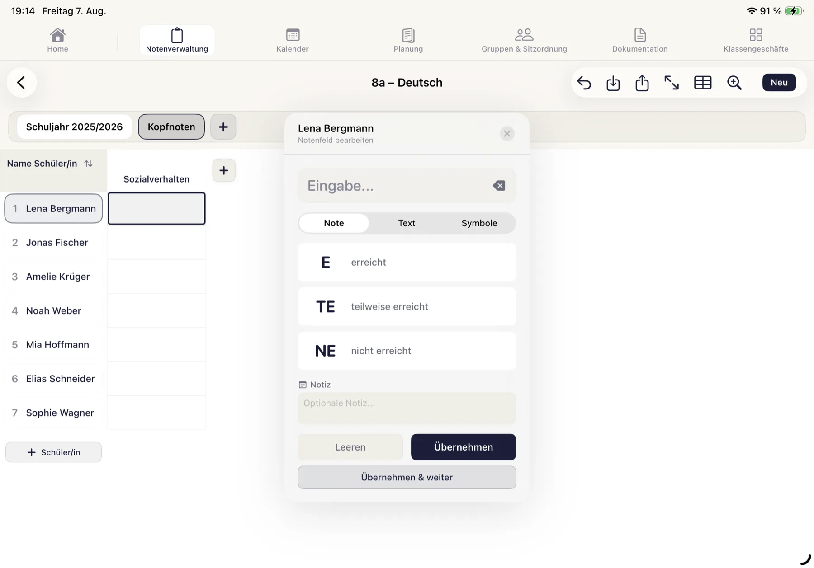
Was Sie sehen: Statt des Ziffernfelds bietet der Editor hier drei beschriftete Tasten: E – erreicht, TE – teilweise erreicht und NE – nicht erreicht.
Was Sie hier tun können: Die Bedienung ist identisch zur Zifferneingabe, inklusive Übernehmen & weiter. Auch Notiz-, Text- und Symbolfeld stehen zur Verfügung.
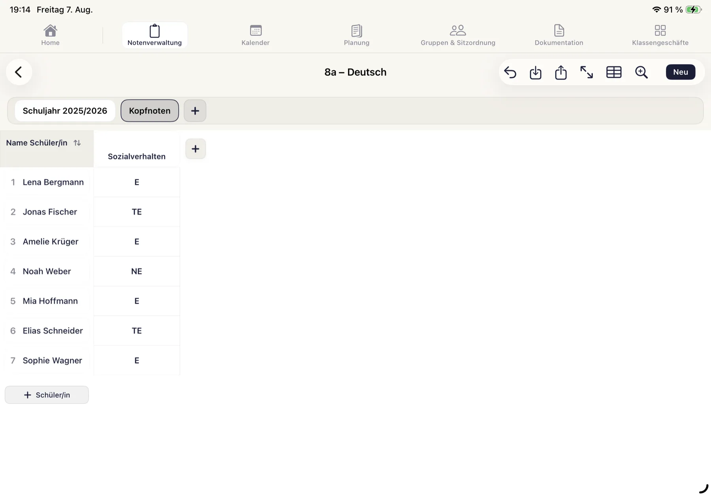
Was Sie sehen: Der Reiter Kopfnoten derselben Klasse 8a arbeitet mit E/TE/NE, während der Reiter Schuljahr 2025/2026 daneben weiter mit 1–6 rechnet. Dieselben sieben Namen, völlig getrennte Bewertungssysteme.
Was Sie hier tun können: Nutzen Sie diese Trennung für alles, was neben der Fachnote steht: Kopfnoten, Arbeitsverhalten, Kompetenzraster. Wechseln Sie einfach über die Reiterleiste hin und her.
Wenn Sie über Notenskala ändern die Skala eines Reiters mit bereits eingetragenen Noten wechseln, folgt zwingend der Schritt Werte zuordnen: Jeder vorhandene Wert wird auf die neue Skala übersetzt und damit dauerhaft überschrieben. Ein Abbruch vorher kostet nichts, ein Durchlauf ist nicht umkehrbar. Legen Sie zum Ausprobieren lieber einen Testreiter an. Steht ein Reiter erst einmal auf E/TE/NE, lässt sich die Berechnungsmethode nur über den Umweg einer anderen Skala wieder umstellen.
8Auswerten: Statistik
Zu jeder Notenspalte und zu jedem Berechnungsbereich liefert ClassTiles eine Auswertung – für den Elternabend, die Zeugniskonferenz oder die eigene Einschätzung, ob eine Arbeit zu schwer war.
Notenspalte: Spaltenkopf länger gedrückt halten →
Statistik.
Berechnungsbereich: Bereichskopf einfach antippen → in der Inline-Leiste
das Reglersymbol rechts neben dem + → Statistik.
Der längere Fingerdruck bietet bei Bereichen je nach Ebene nur
Verschieben und Löschen an – die Statistik fehlt
dort, ist über die Inline-Leiste aber erreichbar.
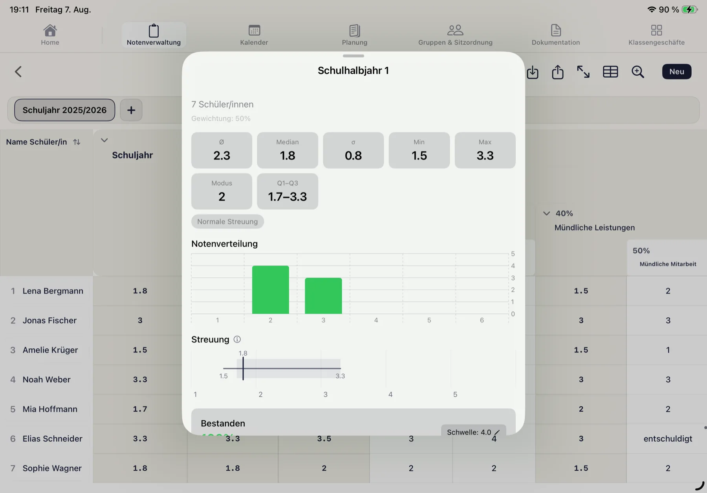
Was Sie sehen: Kopfzeile mit Anzahl der Schüler:innen und der Gewichtung des Bereichs. Darunter die Kennzahlen – Mittelwert Ø, Median, Standardabweichung σ, Min/Max, Modus und die Quartile Q1–Q3. Es folgen das Balkendiagramm Notenverteilung, ein Streuungsdiagramm mit Median und Quartilen sowie der Anteil Bestanden.
Was Sie hier tun können: Über Schwelle: 4.0 stellen Sie ein, ab welcher Note eine Leistung als bestanden gilt – die Prozentzahl darüber passt sich sofort an. Ein Blick auf σ und die Streuung zeigt, ob die Klasse homogen ist oder ob die Ergebnisse weit auseinanderliegen.
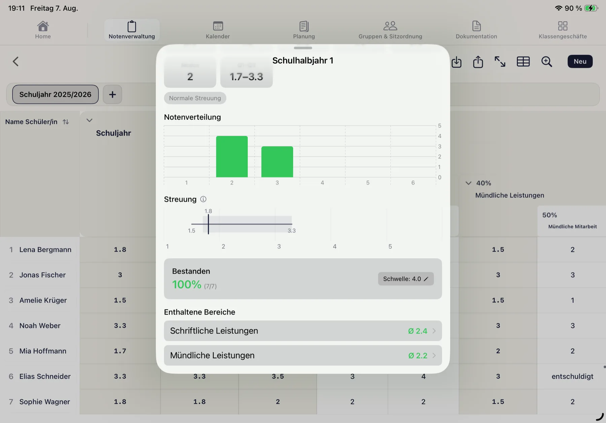
Was Sie sehen: Am Fuß der Auswertung listet Enthaltene Bereiche alle untergeordneten Bereiche mit ihrem jeweiligen Durchschnitt – hier Schriftliche Leistungen Ø 2.4 gegen Mündliche Leistungen Ø 2.2.
Was Sie hier tun können: Tippen Sie eine Zeile an, um in deren eigene Auswertung zu springen. So arbeiten Sie sich von der Jahresnote bis zur einzelnen Klassenarbeit hinunter und sehen unmittelbar, welcher Bereich einen Schnitt nach oben oder unten zieht.
9Ansicht anpassen
Wie viel auf den Bildschirm passt, bestimmen Sie selbst – wichtig, wenn Sie die Tabelle im Unterricht projizieren oder mit vielen Spalten arbeiten.
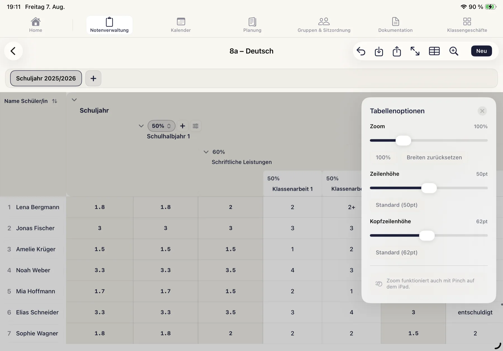
Was Sie sehen: Drei Schieberegler für Zoom, Zeilenhöhe und Kopfzeilenhöhe, dazu Breiten zurücksetzen und der Hinweis, dass Zoomen auch per Fingergeste funktioniert.
Was Sie hier tun können: Für die Projektion erhöhen Sie Zoom und Zeilenhöhe, damit die Klasse mitlesen kann; für die eigene Übersicht verkleinern Sie beides. Breiten zurücksetzen stellt von Hand veränderte Spaltenbreiten wieder auf den Standard. Alle Werte sind reine Anzeigeeinstellungen.
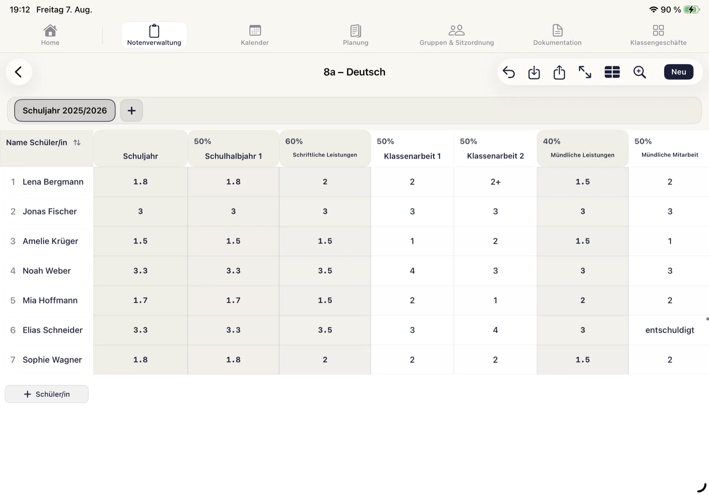
Was Sie sehen: Dieselbe Tabelle wie in Abb. 31, aber mit zusammengefasstem Kopfbereich: Statt der verschachtelten Kästen steht über jeder Spalte nur noch eine kompakte Zeile. Dadurch sind deutlich mehr Zeilen gleichzeitig sichtbar.
Was Sie hier tun können: Schalten Sie mit dem Tabellensymbol in der Werkzeugleiste zwischen beiden Darstellungen um. Der flache Kopf eignet sich zum schnellen Eintragen, der Notenbaum zum Bearbeiten der Struktur – im flachen Modus stehen die Struktur-Befehle nur eingeschränkt zur Verfügung. Welche Ansicht beim Öffnen voreingestellt ist, legen Sie in den Einstellungen fest (Kapitel 11).
10Import und Export
Noten aus einer CSV-Datei übernehmen
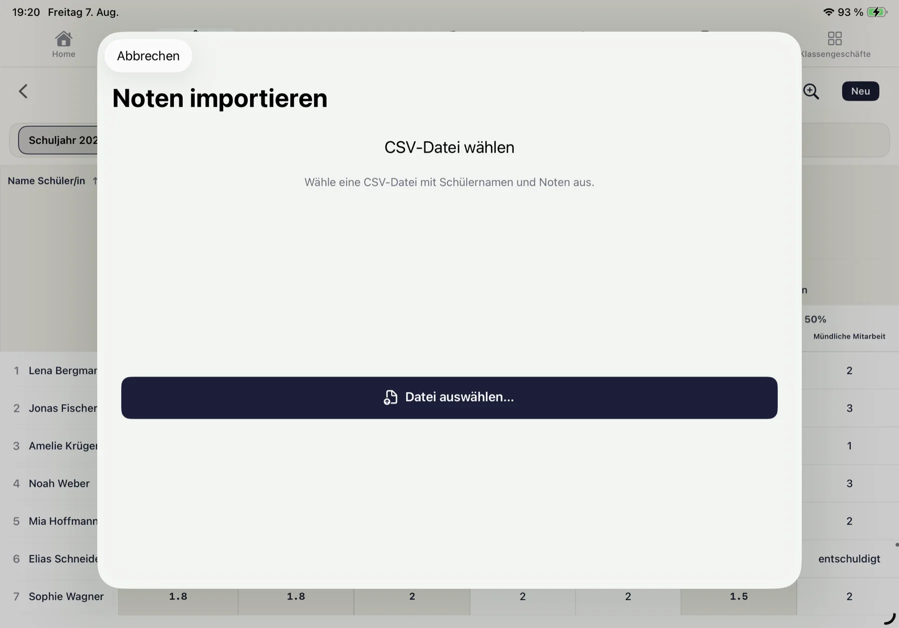
Was Sie sehen: Der Einstieg über das Pfeil-nach-unten-Symbol in der Werkzeugleiste. ClassTiles erwartet eine CSV-Datei mit Namen und Noten.
Was Sie hier tun können: Wählen Sie über Datei auswählen… die Datei aus. Danach ordnen Sie die Spalten der Datei den Zielspalten der Tabelle zu und sehen eine Vorschau mit der Zahl der neuen, überschriebenen, übersprungenen und ungültigen Werte. Sie entscheiden dort auch, ob vorhandene Noten erhalten bleiben oder überschrieben werden.
Der Import kann nur in bestehende Spalten oder in einen bestehenden Bereich schreiben. Hat der Reiter die Struktur Einfache Notenliste ohne Bereiche, läuft die Option Neue Zielspalte ins Leere. Legen Sie in diesem Fall vorher einen Bereich oder die gewünschten Spalten an.
Exportieren
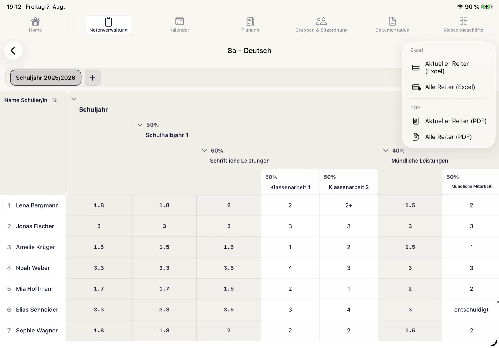
Was Sie sehen: Vier Varianten, gruppiert nach Format: Aktueller Reiter (Excel), Alle Reiter (Excel), Aktueller Reiter (PDF) und Alle Reiter (PDF).
Was Sie hier tun können: Nehmen Sie PDF für alles, was gedruckt, archiviert oder weitergegeben wird – die Kopfzeilen-Hierarchie und Tendenznoten wie 2+ bleiben zeichengetreu erhalten. Excel eignet sich, wenn Sie die Werte weiterverarbeiten wollen. Eingeklappte Bereiche wirken sich nicht auf den Export aus: Exportiert wird immer die vollständige Struktur.
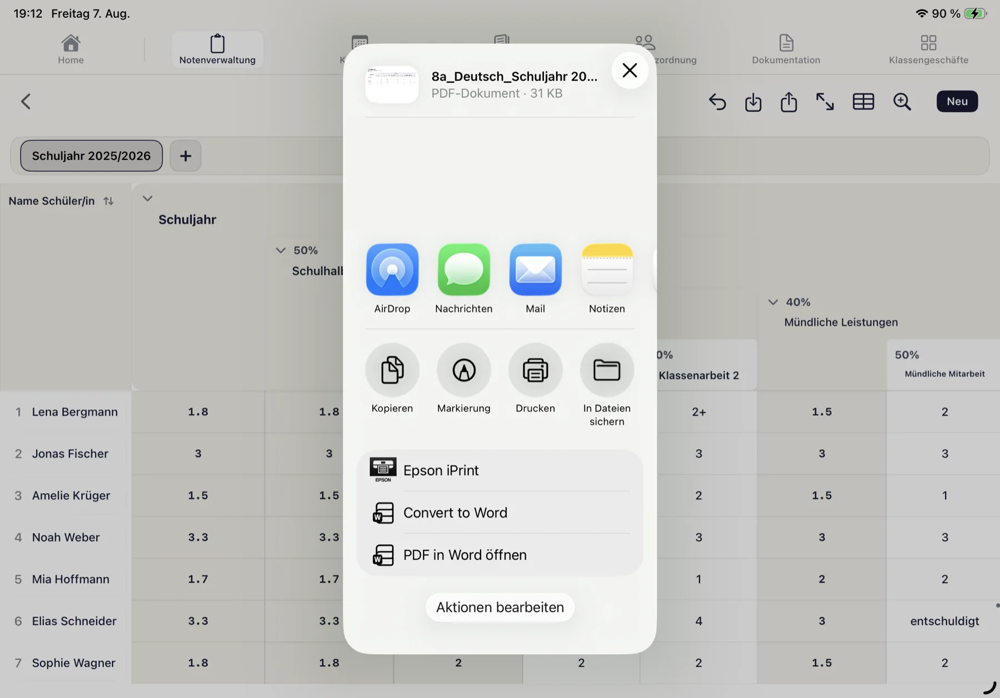
Was Sie sehen: Das System-Teilen-Fenster mit der fertigen Datei. Oben steht der automatisch vergebene Name nach dem Muster Klasse_Fach_Reitername, darunter Format und Größe.
Was Sie hier tun können: Über In Dateien sichern legen Sie die Datei lokal oder in einer Cloud ab, über Drucken geht sie direkt zum Drucker, über Markierung sehen Sie das Ergebnis vor dem Versand noch einmal an.
11Einstellungen mit Bezug zur Notenverwaltung
Die folgenden Einstellungen erreichen Sie über das Zahnrad auf dem Dashboard. Sie gelten für alle Klassen, sofern ein einzelner Reiter nichts Abweichendes festlegt.
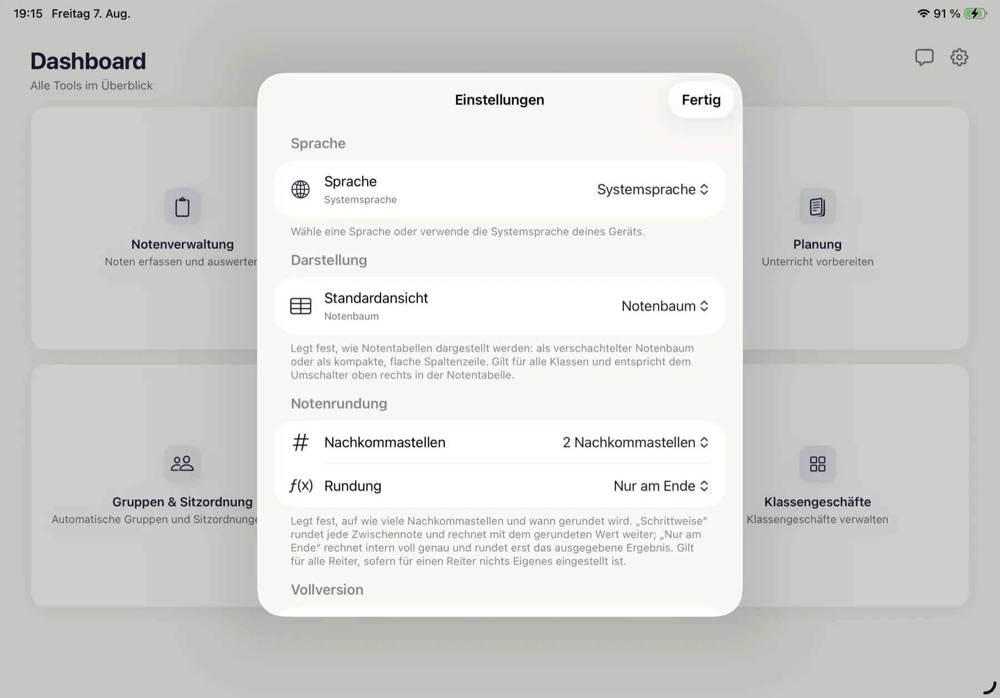
Was Sie sehen: Unter Darstellung legen Sie die Standardansicht fest – Notenbaum oder flache Spaltenzeile. Unter Notenrundung stehen die Nachkommastellen und die Frage, wann gerundet wird.
Was Sie hier tun müssen: Entscheiden Sie zwischen Nur am Ende und Schrittweise. Nur am Ende rechnet intern voll genau und rundet erst das angezeigte Ergebnis – mathematisch sauberer. Schrittweise rundet jede Zwischennote und rechnet mit dem gerundeten Wert weiter; das entspricht dem Vorgehen mancher Schulordnungen. Die Wahl kann Endnoten um eine Nachkommastelle verschieben – prüfen Sie, was Ihre Schule vorschreibt.
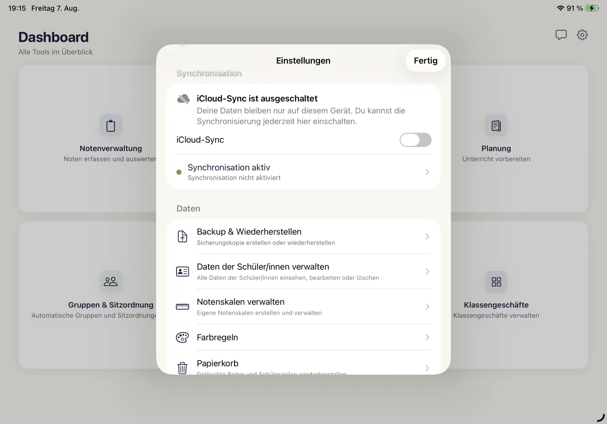
Was Sie sehen: Backup & Wiederherstellen, Daten der Schüler/innen verwalten, Notenskalen verwalten, Farbregeln und Papierkorb – letzterer mit einem Zähler, sobald etwas darin liegt.
Was Sie hier tun können: Unter Daten der Schüler/innen verwalten pflegen Sie die geräteweite Schülerdatenbank: umbenennen, zusammenführen, Datenauskunft nach DSGVO exportieren und Personen löschen, die keiner Klasse mehr zugeordnet sind. Ein Backup vor größeren Umbauten – etwa einem Skalenwechsel – ist in einer Sekunde erstellt und erspart im Zweifel viel Arbeit.
12Rückgängig und Papierkorb
ClassTiles kennt zwei getrennte Sicherheitsnetze: Rückgängig für den letzten Handgriff und den Papierkorb für alles Gelöschte.
Rückgängig
Der Pfeil links in der Werkzeugleiste der Notentabelle nimmt die jeweils letzte Änderung zurück – eine eingetragene Note, eine verschobene Spalte, eine geänderte Gewichtung. Er ist ausgegraut, solange es nichts zurückzunehmen gibt.
Verlassen Sie die Notenverwaltung und kehren zurück, landen Sie wieder in der Klassenliste – und der Rückgängig-Verlauf ist leer. Nehmen Sie einen Fehlgriff also zurück, bevor Sie das Modul wechseln. Für alles Weitere ist der Papierkorb zuständig.
Papierkorb
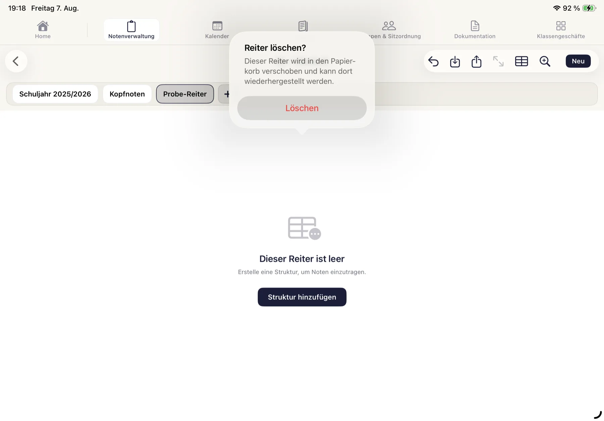
Was Sie sehen: Die Rückfrage Reiter löschen? sagt ausdrücklich zu, dass der Reiter in den Papierkorb wandert und dort wiederhergestellt werden kann.
Was Sie hier tun können: Bestätigen Sie mit Löschen. Möchten Sie doch nicht löschen, tippen Sie neben das Fenster – es schließt sich folgenlos. Dasselbe gilt für Klassen, Spalten, Bereiche und Schülerzeilen.
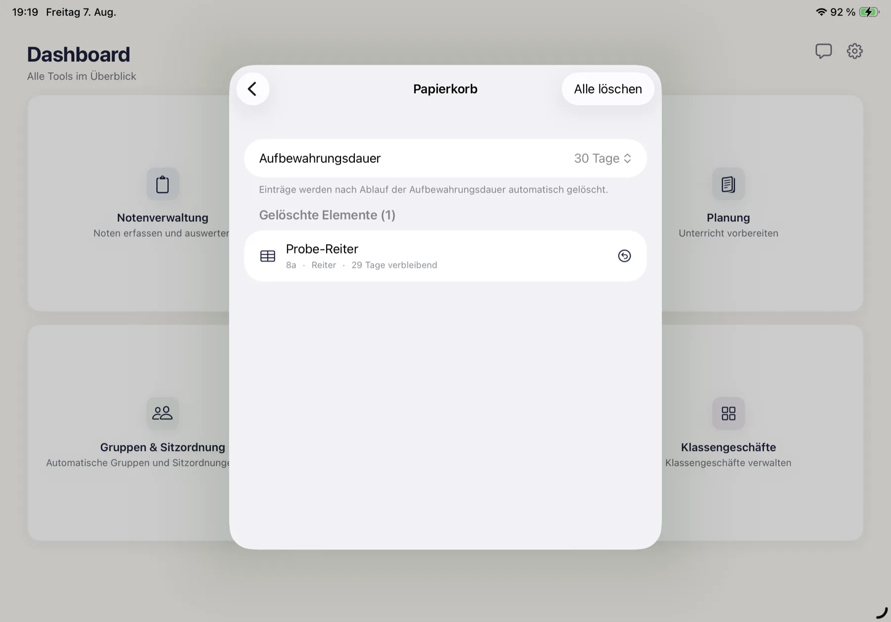
Was Sie sehen: Jeder Eintrag nennt Bezeichnung, zugehörige Klasse, Art des Elements und die verbleibende Aufbewahrungszeit – hier Probe-Reiter · 8a · Reiter · 29 Tage verbleibend. Oben stehen die Aufbewahrungsdauer und die Schaltfläche Alle löschen.
Was Sie hier tun können: Nach Ablauf der Aufbewahrungsdauer – standardmäßig 30 Tage – werden Einträge automatisch endgültig entfernt. Einzelne Einträge löschen Sie vorzeitig, indem Sie die Zeile nach links wischen. Alle löschen leert den gesamten Papierkorb ohne Auswahlmöglichkeit; sehen Sie die Liste vorher durch.
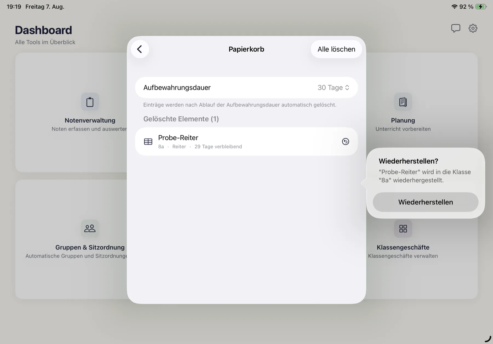
Was Sie sehen: Ein Tipp auf einen Eintrag fragt nach und nennt dabei ausdrücklich das Ziel: „Probe-Reiter“ wird in die Klasse „8a“ wiederhergestellt.
Was Sie hier tun können: Bestätigen Sie mit Wiederherstellen. Zurück kommt das vollständige Element – bei einer gelöschten Klasse also samt Fach, Reitern, Struktur, Schüler:innen und deren Noten. Wurde die zugehörige Klasse selbst gelöscht, ist eine einzelne Schülerzeile nicht wiederherstellbar; der Eintrag ist dann ausgegraut und weist darauf hin.
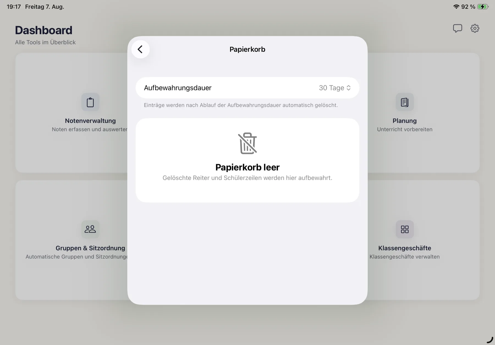
Was Sie sehen: Ist nichts gelöscht, steht hier nur Papierkorb leer – und die Einstellung Aufbewahrungsdauer.
Was Sie hier tun können: Passen Sie die Aufbewahrungsdauer an Ihre Gewohnheiten an. Eine längere Frist gibt Ihnen mehr Zeit, ein versehentliches Löschen zu bemerken.
Zusammenfassung: Welches Netz fängt was?
| Situation | Das hilft |
|---|---|
| Falsche Note eingetragen | Zelle erneut antippen, Leeren, neuen Wert eingeben – oder sofort Rückgängig |
| Gewichtung verstellt | Rückgängig, solange Sie das Modul nicht verlassen haben |
| Spalte, Reiter oder Klasse gelöscht | Papierkorb – standardmäßig 30 Tage |
| Person aus der Klasse entfernt | Papierkorb (Eintragsart Schülerzeile) – die Person selbst bleibt in der Datenbank |
| Skalenwechsel hat Noten überschrieben | Nur ein Backup hilft – deshalb vorher eines anlegen |